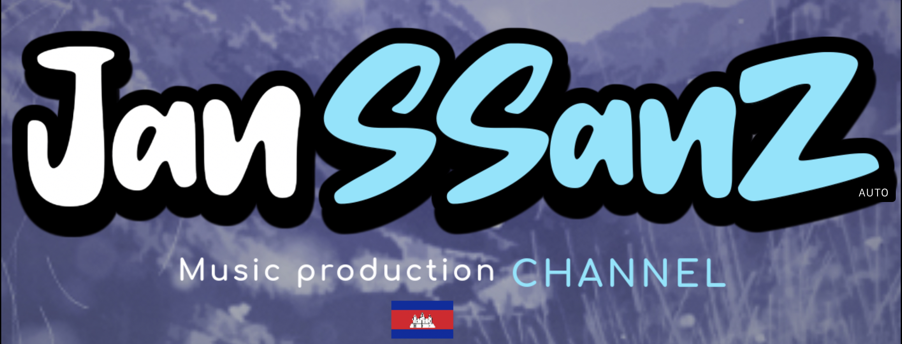

About Jan SSanZ:
JanSSanZ is a 16year-old boy who likes listening and making his own music. He also knows how to design, edit artwork, make 3d models and animate them during his free time.
This is JanSSanZ's profile picture
Some random facts about JanSSanZ:
- He has his own youtube channel named JanSSanZ.
- He used to make gaming videos a few years ago but has switched to making music.
- He has made and published 4 songs so far.
All of JanSSanZ's songs:
He has made a lot of songs until now, and he also produced his own beat for his songs, click one of the links below to take a listen: